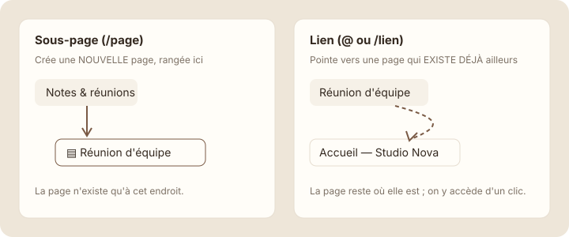

Les liens entre pages
À la fin de cette leçon, tu sauras relier des pages entre elles avec « @ », « /lien » et « Copier le lien », sans jamais les dupliquer.
Étape 1 : comprendre
L'arborescence range chaque page à un seul endroit. Mais souvent, une même page sert à plusieurs endroits : le compte rendu de la réunion Orion concerne à la fois les réunions et le projet Orion. Tu ne vas pas la copier deux fois. Tu vas faire un lien.
Un lien ne déplace rien et ne copie rien : c'est un raccourci vers une page qui existe déjà, comme un panneau indicateur. Notion propose trois façons d'en faire un :
- La mention « @ », au milieu d'une phrase. Tape « @ » puis le début du titre, et choisis la page. Le lien s'insère dans le texte : « Voir @Réunion client Orion pour le détail ».
- Le bloc « Lien vers une page » (Link to page), sur une ligne à part. Tape « /lien » et choisis la page. Il ressemble à un bloc page, avec une petite flèche en plus sur l'icône.
- Le lien copié. Dans le menu ··· d'une page, « Copier le lien » (Copy link) donne une adresse que tu peux coller dans Notion, dans un e-mail ou un message.
Bonus : quand une page est citée ailleurs, Notion l'affiche sous son titre, dans les rétroliens (Backlinks). Tu vois ainsi d'où on vient vers cette page.

Un lien mène vers une page sans la déplacer ni la copier : la page reste à sa place dans l'arborescence.
Attention : ne confonds pas « /page » et « /lien ». « /page » crée une nouvelle page vide ; « /lien » pointe vers une page qui existe déjà. Si tu te retrouves avec deux pages au même nom, c'est souvent que tu as utilisé « /page » à la place de « /lien ».
Un compte rendu bien relié
Voici le compte rendu de la réunion d'équipe de Studio Nova. Repère les deux liens : l'un au milieu du texte, l'autre sur sa propre ligne.
Réunion d'équipe — 3 novembre
Présents : Emma, Lucas, Sarah
Point sur le site Orion : la maquette est validée. Les détails sont dans @Projets.
Prochaine réunion : lundi 10 novembre.
↗ Ressources
« @Projets » est une mention dans une phrase. « ↗ Ressources » est un bloc lien vers une page. Les deux ouvrent une page qui reste rangée à sa place, sous « Studio Nova ». Et la ligne grise sous le titre indique que l'accueil fait déjà un lien vers ce compte rendu.
Ajouter des liens dans Studio Nova
- Ouvre « Réunion d'équipe — 3 novembre ». Sous l'ordre du jour, écris : « Les détails sont dans ».
- Tape « @Proj » : une liste de pages apparaît. Choisis « Projets ». Le lien s'insère dans ta phrase.
Capture d'écran Notion Mention @ en cours · images/captures/m03-mention-projets.png
- Va à la ligne, tape « /lien » et choisis « Lien vers une page » (Link to page). Cherche « Ressources » et valide.
- Ouvre maintenant « Accueil — Studio Nova ». Dans « Liens utiles », ajoute « @Notes & réunions ».
- Retourne dans « Notes & réunions » : sous le titre, Notion indique un rétrolien depuis l'accueil.
Capture d'écran Notion Rétroliens sous le titre · images/captures/m03-retroliens.png
- Enfin, ouvre le menu ··· de « Projets » et clique sur « Copier le lien ». Colle-le dans un e-mail ou un message de test pour voir l'adresse obtenue.
Astuce : la mention « @ » sert aussi pour les personnes (« @Lucas ») et les dates (« @demain »). Tu verras les mentions de personnes au module 7.
Exercice · dans Notion
Relier les pages de Studio Nova
- Dans la réunion du 3 novembre, mentionne « @Projets » dans une phrase.
- Ajoute un bloc « Lien vers une page » vers « Ressources ».
- Dans l'accueil, ajoute un lien vers « Notes & réunions » dans « Liens utiles ».
Résultat attendu : le compte rendu contient deux liens qui ouvrent « Projets » et « Ressources ». L'accueil propose maintenant trois liens utiles. Dans la barre latérale, aucune page n'a été dupliquée : il y a toujours une seule page « Projets ».
Étape 4 : vérifier
À retenir
- Un lien mène vers une page existante, sans la déplacer ni la copier.
- « @ » insère un lien dans une phrase ; « /lien » crée un bloc lien sur sa propre ligne ; « Copier le lien » donne une adresse à partager.
- « /page » crée une nouvelle page : ne le confonds pas avec « /lien ».
Choisis une réponse avant de valider.
Un lien donne accès au compte rendu depuis le projet, sans le dupliquer ni le retirer de « Notes & réunions ». Une copie finirait par diverger de l'original.
Choisis une réponse avant de valider.
« /page » crée une nouvelle page. Supprime la page vide, puis recommence avec « /lien » ou « @ ».
Choisis une réponse avant de valider.
Les rétroliens (Backlinks) listent, sous le titre, les pages qui mentionnent celle-ci.